Generate publication-quality pedigree diagrams from standard genetics pedigree files
v0.4.0pip install pypedigreepip install pypedigree[pandas]git clone https://github.com/darkxander/Pypedigree.git
cd pypedigree
uv sync --extra dev# Render a pedigree file to PNG
pypedigree family.ped -o output.png
# Display interactively
pypedigree family.ped --show
# Render specific family at high resolution
pypedigree family.ped --family FAM1 --dpi 300 -o family1.svgfrom pypedigree import parse_pedigree, render_pedigree
ped = parse_pedigree("family.ped")
fig = render_pedigree(ped, output="output.png")from pypedigree import PedigreeBuilder
builder = PedigreeBuilder("FAM1")
builder.add_individual("father", sex="male")
builder.add_individual("mother", sex="female")
builder.add_individual("child", sex="male",
father="father", mother="mother",
phenotype="affected")
fig = builder.render(output="trio.png")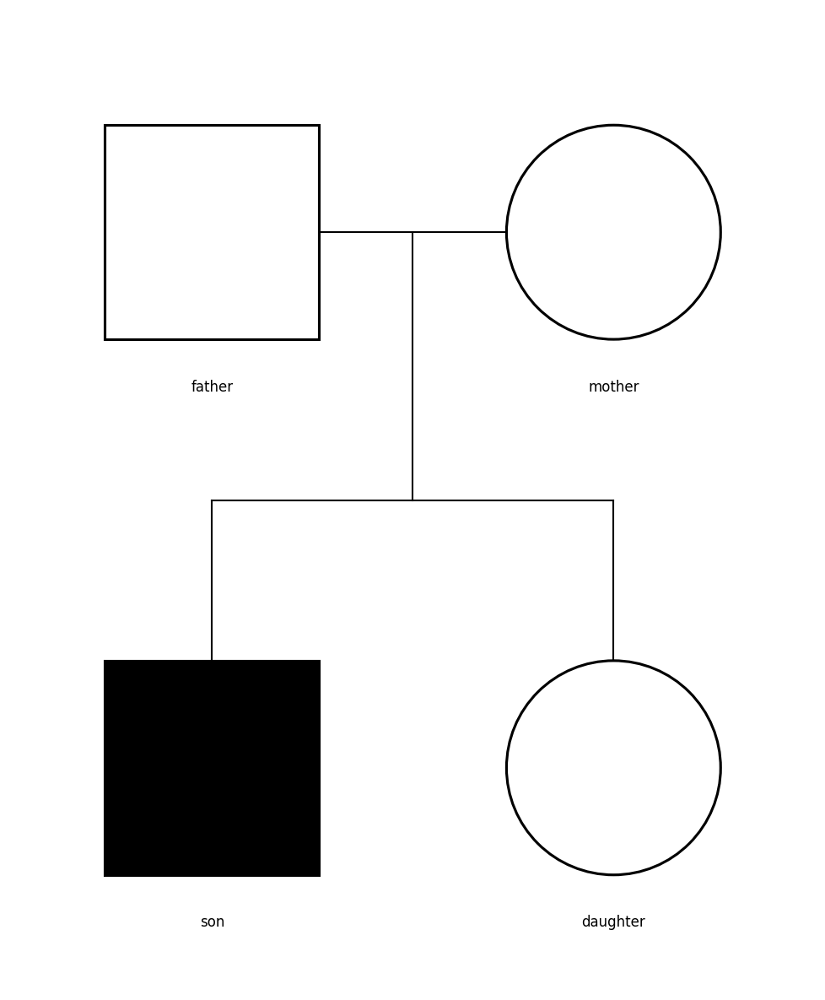
pypedigree reads tab-, comma-, or space-separated pedigree files. The separator is auto-detected.
When a header row is present, columns are matched by name, not by position. This means you can arrange columns in any order, and any column that doesn't match a known structural name is automatically treated as a phenotype column.
The parser recognises multiple aliases for each structural column:
| Role | Accepted Aliases |
|---|---|
| Family ID | FID, family_id, Family |
| Individual ID | ID, IID, sample_id, Individual |
| Father | Father, Pat, Dad, paternal_id |
| Mother | Mother, Mat, Mom, Mum, maternal_id |
| Sex | Sex, Gender |
| Phenotype | Phenotype, Pheno, Affected |
| Column | Name | Description | Values |
|---|---|---|---|
| 1 | family_id | Family identifier | Any string |
| 2 | sample_id | Individual identifier (unique within family) | Any string |
| 3 | paternal_id | Father's sample_id | ID or 0 if unknown |
| 4 | maternal_id | Mother's sample_id | ID or 0 if unknown |
| 5 | sex | Biological sex | 1=male, 2=female, 0=unknown |
| 6 | phenotype | Affected status | 1=unaffected, 2=affected, 0=unknown |
FAM1 father 0 0 1 1
FAM1 mother 0 0 2 1
FAM1 child father mother 1 2| Column | Name | Description | Values |
|---|---|---|---|
| 7 | date_of_birth | Birth date | YYYYMMDD, YYYYMM, or YYYY |
| 8 | twins | Twin relationships | TYPE:sibling_id (comma-separated) |
| 9 | deceased | Vital status | 1=deceased, 0=alive |
| 10 | proband | Index case | 1=proband, 0=not |
| 11 | carrier | Carrier status | 0=not carrier, 1=carrier (heterozygous), 2=obligate carrier. Per-gene status: cr_ columns, see Carrier Notation |
Standard notation — pregnancies and pregnancy losses, adoption, childlessness, gamete donors and surrogates, gender identity, the consultand — has its own named columns, see Standard Notation.
carrier column requires a header row to be present. When using inline phenotypes (columns 12+), the carrier column must appear before the phenotype columns.
MZ = monozygotic (identical), DZ = dizygotic (fraternal), TW = unknown zygosity.
Example: MZ:sibling_id
When a header row is present, columns 11 and beyond are parsed as additional phenotype values. Column names from the header define phenotype names.
family_id sample_id father mother sex pheno dob twins deceased proband epilepsy IQ SRS
FAM1 father 0 0 1 1 0 0 0 0 0 110 12
FAM1 mother 0 0 2 1 0 0 0 0 1 95 25
FAM1 son father mother 1 2 0 0 0 1 1 85 40
FAM1 daughter father mother 2 1 0 0 0 0 0 120 81=unaffected, 2=affected, 0 or -9=unknown are properly handled in extra phenotype columns, following the same convention as the main phenotype column., NA, NaN, -9, empty): white/blank banda_ prefix columns are annotation columns (text below IDs, not phenotypes)gi_ prefix for gradient inverted (color→white, for metrics where low = bad)cr_ prefix for carrier status of one gene or condition (0/1/2), drawn as a patterned section, see Carrier Notation0,712 is accepted as 0.712show_phenotype_labels style option or the --show-phenotype-labels CLI flag.
Extra phenotypes can also be supplied via a separate TSV file with the --pheno CLI flag:
sample_id epilepsy IQ SRS
father 0 110 12
mother 1 95 25
son 1 85 40
daughter 0 120 8pypedigree PEDIGREE_FILE [OPTIONS]| Option | Description | Default |
|---|---|---|
-o, --output PATH | Output file path (format from extension: .png, .svg, .pdf) | None (display) |
--format FORMAT | Force output format: png, svg, pdf | Auto-detect |
--family ID | Render only this family | All families |
--dpi INT | Output resolution in DPI | 150 |
--show | Display interactively (matplotlib window) | Off |
--style PATH | JSON file with PedigreeStyle overrides | None |
--separator SEP | Force separator: tab, comma, space | Auto-detect |
--pheno PATH | Separate .pheno TSV file for extra phenotypes | None |
--annotations PATH | Separate TSV file with annotation text (displayed below individual IDs) | None |
--outline-color COLOR | Shape outline color (e.g. grey, #888) | black |
--carrier-notation [nsgc2022|legacy] | Carrier notation: patterned sections (NSGC 2022) or half-fill and center dot | nsgc2022 |
--no-labels | Hide sample ID labels under shapes | Off |
--no-legend | Hide phenotype legend | Off |
--show-phenotype-labels | Show YES/NO text inside binary phenotype bands (hidden by default) | Off |
--plink | Treat input as PLINK .ped file (ignore genotype columns after column 6) | Off |
--interactive | Generate interactive SVG with tooltips, click highlighting, and zoom/pan (same bands, legend and PGS curves as the PNG; not with --circular) | Off |
--circular | Use circular/radial layout with founders at centre, descendants on concentric rings | Off |
--version | Show version and exit | — |
# Basic rendering
pypedigree family.ped -o pedigree.png
# SVG with custom DPI and no labels
pypedigree family.ped -o pedigree.svg --dpi 300 --no-labels
# With external phenotype file and custom style
pypedigree family.ped --pheno phenotypes.tsv --style custom.json -o result.pdf
# Grey outlines for a cleaner look
pypedigree family.ped --outline-color grey -o pedigree.png
# Interactive SVG with tooltips and click highlighting
pypedigree family.ped --interactive -o pedigree.svg
# Show YES/NO labels in binary phenotype bands
pypedigree family.ped --show-phenotype-labels -o pedigree.png
# Read a PLINK .fam file (auto-detected from extension)
pypedigree family.fam -o pedigree.png
# Read a PLINK .ped file (use --plink to ignore genotype columns)
pypedigree family.ped --plink -o pedigree.pngparse_pedigree(file_path)Parse a pedigree file (.ped) into a Pedigree object.
from pypedigree import parse_pedigree
ped = parse_pedigree("family.ped")
for fam_id, family in ped.families.items():
print(f"{fam_id}: {len(family.individuals)} individuals")parse_pedigree_from_string(text)Parse pedigree data from a string (useful for testing or embedded data).
from pypedigree import parse_pedigree_from_string
data = """FAM1\tfather\t0\t0\t1\t1
FAM1\tmother\t0\t0\t2\t1
FAM1\tchild\tfather\tmother\t1\t2"""
ped = parse_pedigree_from_string(data)parse_pedigree_from_dataframe(df)Parse from a pandas DataFrame. Requires pip install pypedigree[pandas].
import pandas as pd
from pypedigree import parse_pedigree_from_dataframe
df = pd.read_csv("family.ped", sep="\t", header=None)
ped = parse_pedigree_from_dataframe(df)parse_phenotype_file(file_path)Parse a separate phenotype TSV file.
from pypedigree import parse_phenotype_file, apply_phenotypes_to_pedigree
pheno_data, pheno_names = parse_phenotype_file("phenotypes.tsv")
apply_phenotypes_to_pedigree(ped, pheno_data, pheno_names)parse_annotation_file(file_path)Parse an external annotation TSV file. First row is a header (sample_id, ann1, ann2, ...), subsequent rows contain text values.
from pypedigree import parse_annotation_file, apply_annotations_to_pedigree
ann_data, ann_names = parse_annotation_file("annotations.tsv")
apply_annotations_to_pedigree(ped, ann_data, ann_names)render_pedigree(pedigree, ...)Render all families in a pedigree. Returns a matplotlib Figure.
from pypedigree import parse_pedigree, render_pedigree, PedigreeStyle
ped = parse_pedigree("family.ped")
style = PedigreeStyle(dpi=300)
fig = render_pedigree(ped, style=style, output="high_res.png")render_family(family, ...)Render a single Family object. Returns (Figure, FamilyLayout).
from pypedigree import parse_pedigree, render_family
ped = parse_pedigree("family.ped")
family = list(ped.families.values())[0]
fig, layout = render_family(family)
fig.savefig("family.png", dpi=150, bbox_inches="tight")render_interactive_svg(pedigree, ...)Render all families as an interactive SVG with tooltips, click highlighting, and zoom/pan. Returns the SVG markup as a string. Draws the same figure as render_pedigree(). No additional dependencies required.
from pypedigree import parse_pedigree, render_interactive_svg
ped = parse_pedigree("family.ped")
svg_str = render_interactive_svg(ped, output="interactive.svg")compute_layout(family, style)Compute layout coordinates without rendering. Returns a FamilyLayout with node positions and edge geometry.
from pypedigree import compute_layout, PedigreeStyle
layout = compute_layout(family, PedigreeStyle())
for node in layout.nodes:
print(f"{node.individual_id}: x={node.x:.1f}, y={node.y:.1f}")compute_layout_circular(family, style)Compute circular/radial layout coordinates. Founders sit at the centre and each later generation on its own concentric ring, in the left-to-right order of the hierarchical layout wrapped around the circle. The circular layout therefore inherits its guarantees: siblings stay together, sibship arcs of different couples never overlap, partners sit side by side, and tangled loops are drawn with duplicated individuals.
from pypedigree import compute_layout_circular, PedigreeStyle
layout = compute_layout_circular(family, PedigreeStyle())
for node in layout.nodes:
print(f"{node.individual_id}: x={node.x:.1f}, y={node.y:.1f}")base_radius is expanded automatically when a ring would be too
crowded for the shapes to fit, so nodes never overlap. Shapes stay upright: a
square turned to face outward would read as the unknown-sex diamond, and
phenotype bands stay horizontal as in the hierarchical layout. ID labels are
set radially outside each shape, away from the lines arriving from the centre,
on a white backing. Twins hang from one point of the sibship arc, as a V with
a bar for MZ twins, and duplicates are joined to their original by a dotted
arc.
The PedigreeBuilder provides a fluent interface for constructing pedigrees programmatically,
without writing .ped files. All methods return self for method chaining.
PedigreeBuilder(family_id="FAM1")Create a new builder with a default family ID.
add_individual(sample_id, ...)Add an individual to the pedigree.
"male", "female", "unknown" (or "m", "f", "u", "1", "2", "0")."affected", "unaffected", "unknown"."P", "SAB", "TOP", "ECT" or "SB", see Standard Notation."in" (father/mother are the adoptive parents) or "out"."choice" or "infertility"."D" gamete donor or "S" surrogate."man", "woman" or "nonbinary": the symbol follows it, and sex is the sex assigned at birth.add_union(partner1, partner2, ...)Explicitly add a union between two individuals. Unions are auto-inferred from parent references, so this is only needed for childless couples or to set consanguinity/broken flags.
set_style(style)Set a custom PedigreeStyle for rendering.
build() → PedigreeBuild a Pedigree object from added individuals. Auto-infers unions and creates phantom parents.
render(output=None, ...) → FigureBuild and render in one step. Auto-assigns phenotype colors if not set.
render_interactive_svg(output=None) → strBuild and render as an interactive SVG. Returns the SVG markup as a string.
If output is provided, the SVG is also written to that file path.
See the Interactive SVG section for details.
from pypedigree import PedigreeBuilder
builder = PedigreeBuilder("FAM1")
# Generation 1: founders
builder.add_individual("gf", sex="male")
builder.add_individual("gm", sex="female")
# Generation 2
builder.add_individual("father", sex="male", father="gf", mother="gm")
builder.add_individual("mother", sex="female")
# Generation 3 with phenotypes
builder.add_individual("child1", sex="male",
father="father", mother="mother",
phenotype="affected", proband=True,
phenotypes={"IQ": 85, "epilepsy": 1})
builder.add_individual("child2", sex="female",
father="father", mother="mother",
phenotypes={"IQ": 120, "epilepsy": 0})
fig = builder.render(output="family.png")The builder has built-in Jupyter support via _repr_png_. Simply evaluate a builder cell to see the pedigree inline:
builder # Displays the pedigree diagram inlinepypedigree can display multiple phenotypes per individual using colored bands or gradient fills on each shape.
| Type | Values | Rendering |
|---|---|---|
| Binary | 0 or 1 | Empty (0) or filled (1) color band |
| Continuous | Numeric > 1 | Color gradient: white (min) → full color (max) |
| PGS | Any numeric | Vertical Gaussian distribution curve (to the left of shape) |
| Missing | ., NA, NaN, -9, empty | White/blank band |
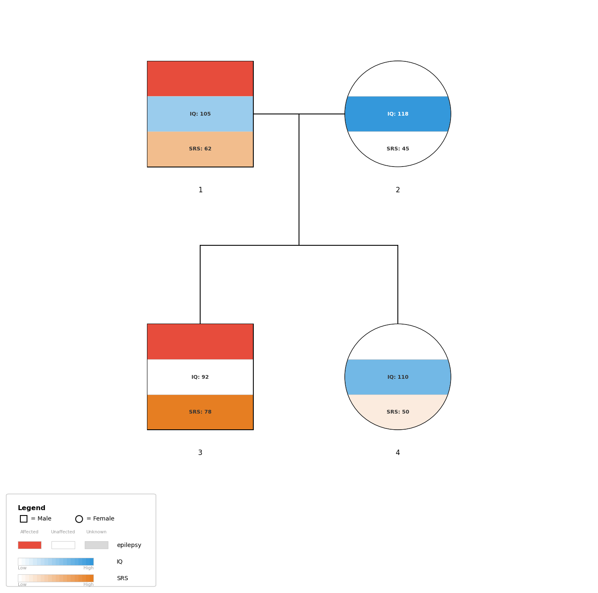
// style.json
{
"phenotype_colors": {
"epilepsy": "#e74c3c",
"IQ": "#3498db",
"SRS": "#e67e22"
}
}pypedigree family.ped --style style.json -o output.pngstyle = PedigreeStyle()
style.phenotype_colors = {
"epilepsy": "#e74c3c",
"IQ": "#3498db",
"SRS": "#e67e22",
}
fig = render_pedigree(ped, style=style)When no phenotype_colors are set, colors are assigned from the default
palette. This happens for every entry point — the CLI, render_pedigree()
and PedigreeBuilder — via resolve_style(), so all three
produce the same figure for the same input.
When a column is named PGS (case-insensitive), it is rendered as a vertical Gaussian curve to the left of each individual's shape, instead of a band. The curve's position along the x-axis reflects the PGS value relative to other individuals.
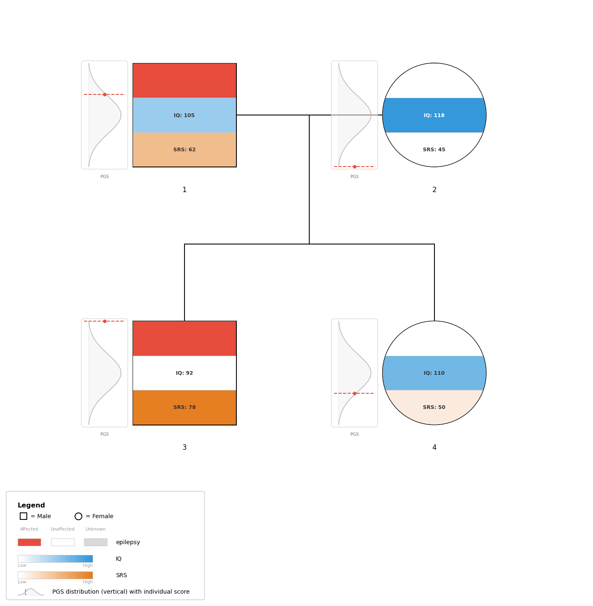
Any column starting with PGS (case-insensitive) is treated as a PGS column. For example: PGS_autism, PGS_IQ, PGS_ADHD. All PGS columns share a single gaussian curve, with each trait's individual score marked by a colored dashed line. Colors are set via the pgs_colors style option.
By default, gradient values are normalized to [0,1] using the data's min/max. You can override this with the gradient_range style option to define fixed scales:
{
"gradient_range": {
"SRS": [40, 90]
}
}For phenotypes with a meaningful midpoint (e.g., IQ where 100 is average), use gradient_diverging to create a red→white→green scale:
{
"gradient_diverging": {
"IQ": {"min": 40, "mid": 100, "max": 160, "color_low": "#e74c3c", "color_high": "#2ecc71"}
}
}Values below the midpoint blend toward color_low, values above blend toward color_high, and the midpoint is white.
Each distinct value of a c_ column gets its own color, assigned in the
order the values appear in the file so the result is reproducible. The column's own
phenotype_colors entry is used for the first value; the remaining values
avoid both that color and the colors of the other phenotype columns, so two bands on
the same individual stay visually distinct. The legend lists exactly the values present
in the rendered pedigree.
When colors are auto-assigned, the following 8-color palette is used:
| #e74c3c | #3498db | #e67e22 | #2ecc71 | #9b59b6 | #1abc9c | #f1c40f | #e91e63 |
By default, pypedigree auto-detects how to render each phenotype column (binary vs. continuous). You can override this behaviour by adding a prefix to the column name in the header row. The prefix is stripped from the display name in legends and labels.
| Prefix | Mode | Rendering | Use Case | |
|---|---|---|---|---|
b_ |
Binary | Color band when affected, white when unaffected, grey when unknown. No text by default. | Diagnoses, yes/no traits | |
g_ |
Gradient | White→color continuous gradient scale. Value labels shown inside band. | Quantitative scores (IQ, SRS, etc.) | |
o_ |
Outline | Colored shape border when affected, instead of a filled band. Does not consume band space. | Proband marker, secondary highlight | |
c_ |
Categorical | Distinct color per unique string value, shown as a colored band with label. | Diagnosis categories, subtypes | |
cr_ |
Carrier | Carrier status of one gene or condition: 0 not a carrier, 1 carrier, 2 obligate carrier. Drawn as a patterned section of the symbol, with its own legend row. |
CFTR, HEXA, ATM carrier status | |
gi_ | GRADIENT_INVERTED |
Color→white gradient (inverted). High value = white, low value = full color. Use for metrics where low = bad (e.g., IQ: low IQ = red). | Any numeric | Color gradient bar (reversed direction) |
a_ | Annotation | Text annotation displayed below the individual's ID label. Not rendered as a phenotype band. | Any text string | Italic grey text below ID |
| (none) | Auto | Resolved once per column from all of its values: categorical if any value is a string, gradient if any numeric value falls outside 0/1/2, binary otherwise. A column therefore never mixes band types, and its legend row always matches its bands. | Backward-compatible default |
FID ID Father Mother Sex b_ASD g_IQ o_Proband c_DiagnosisThis defines four phenotype columns:
b_, g_, o_, c_) is removed from the phenotype name shown in legends and labels. For example, b_ASD appears as "ASD" in the legend.
FID ID Father Mother Sex b_ASD g_IQ o_Proband c_Diagnosis
FAM1 father 0 0 1 0 105 0 Control
FAM1 mother 0 0 2 0 98 0 Control
FAM1 child1 father mother 1 2 72 1 ASD
FAM1 child2 father mother 2 1 110 0 ControlThe PhenotypeDisplayMode enum is exported from pypedigree and represents the five display modes:
from pypedigree import PhenotypeDisplayMode
# Available modes:
PhenotypeDisplayMode.AUTO # No prefix, auto-detect
PhenotypeDisplayMode.BINARY # b_ prefix
PhenotypeDisplayMode.GRADIENT # g_ prefix
PhenotypeDisplayMode.OUTLINE # o_ prefix
PhenotypeDisplayMode.CATEGORICAL # c_ prefixAnnotations are text lines displayed below each individual's ID label. They are useful for showing variant names, gene names, or other per-individual notes.
Add columns with the a_ prefix in the .ped header. The prefix is stripped for display; only the value is shown.
FID IID PAT MAT SEX b_Autism IQ g_SRS a_Gene1 a_Gene2
196 001 002 003 1 2 90 90 DMXL2
196 003 0 0 2 1 75 -9 DMXL2 CAMK2B
196 006 002 003 1 2 70 87 CAMK2BMissing values (0, -9, NA, empty) produce no annotation line. When annotations are present, the vertical spacing between generations is automatically increased to prevent overlap.
Annotations can also be loaded from a separate TSV file via --annotations PATH:
IID Gene1 Gene2
001 DMXL2
003 DMXL2 CAMK2B
006 CAMK2Bfrom pypedigree import PedigreeBuilder
builder = PedigreeBuilder("FAM1")
builder.add_individual("001", sex="male",
annotations=["DMXL2"])
builder.add_individual("003", sex="female",
annotations=["DMXL2", "CAMK2B"])pypedigree follows the NSGC focused revision of the standardized pedigree nomenclature (Bennett et al., J Genet Couns 2022;31(6):1238–48), which no longer marks carriers with a dot: the symbol is divided into as many sections as needed, and each carrier result gets its own fill pattern, defined in the legend. An affected carrier, or the carrier of two conditions, therefore shows every result.
| Status | Symbol (default, NSGC 2022) | Symbol (carrier_notation: "legacy") |
|---|---|---|
| Carrier | Patterned section, one pattern per carrier source | Half-filled shape |
| Obligate carrier | The same pattern at half the density | Center dot |
| Affected carrier | Symbol split in two: filled section, then patterned section | Half-filled shape (the affected fill is not shown) |
Sections are vertical and ordered left to right: the affected section first, then one per carrier source in column order. A carrier of a single result has a fully patterned symbol. When phenotype bands are drawn, each carrier source is an extra band below them, at the same place for everyone.
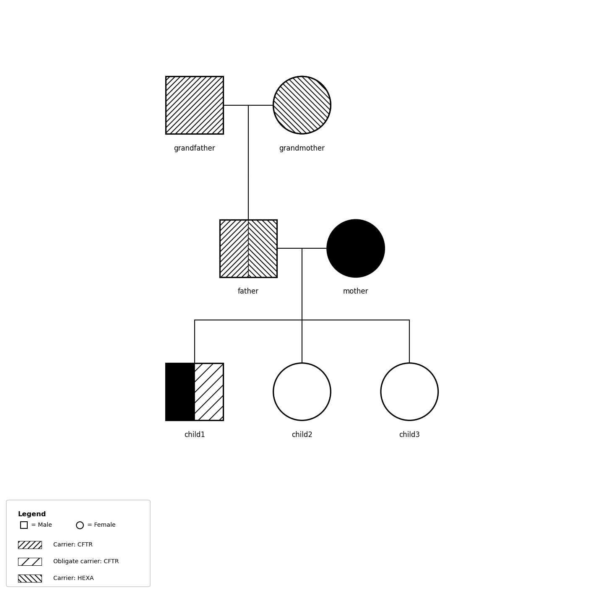
carrier_genes.ped: one cr_ column per gene. The father carries both CFTR and HEXA; child1 is affected and an obligate CFTR carrier.Carrier status comes from the carrier column and from any number of cr_ columns (one per gene or condition, e.g. cr_CFTR). Each is a separate carrier source, with its own pattern and legend row, and accepts:
| Value | Meaning |
|---|---|
0 | Not a carrier |
1 | Carrier (heterozygous) |
2 | Obligate carrier, as declared in the file (pypedigree does not infer it) |
-9, NA, empty | Unknown (cr_ columns only): no section, or an “NA” band |
family_id sample_id father mother sex pheno cr_CFTR cr_HEXA
FAM1 father 0 0 1 1 1 1
FAM1 mother 0 0 2 2 0 0
FAM1 son father mother 1 2 2 0
FAM1 daughter father mother 2 1 0 -9Use the carrier and obligate_carrier parameters of add_individual() for the carrier column, and cr_-prefixed keys in phenotypes for per-gene status:
from pypedigree import PedigreeBuilder
builder = PedigreeBuilder("FAM1")
builder.add_individual("father", sex="male", carrier=True)
builder.add_individual("mother", sex="female", phenotypes={"cr_CFTR": 1})
builder.add_individual("child", sex="female",
father="father", mother="mother",
obligate_carrier=True)
fig = builder.render(output="carriers.png")The pre-2022 notation stays available for the carrier column: PedigreeStyle(carrier_notation="legacy"), "carrier_notation": "legacy" in a style file, or --carrier-notation legacy on the command line. cr_ columns are still drawn as patterned sections. The radius of the legacy center dot is set by carrier_dot_radius (default 0.08).
Beyond sex, affection status, death, twins and carriers, pypedigree draws the other symbols of the NSGC nomenclature (Bennett et al., J Genet Couns 2008;17:424–33, and its 2022 revision centred on sex and gender) in the PNG and the interactive SVG, in both layouts. Each comes from one column, recognised by name in the header row.
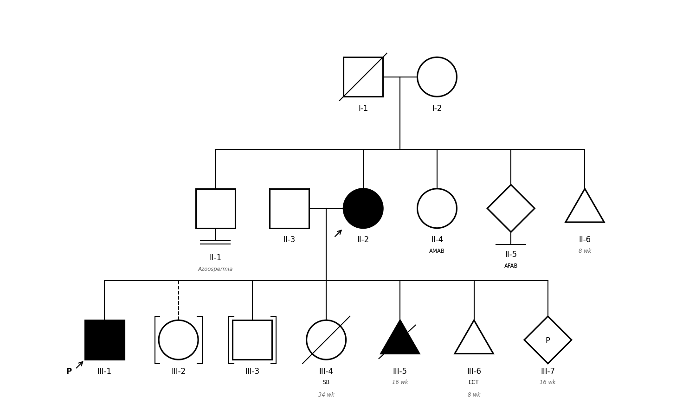
nomenclature.ped (family FAM1): infertility and childlessness by choice (II-1, II-5), the consultand (II-2), a transgender woman and a non-binary person (II-4, II-5), a miscarriage (II-6); children adopted in and out (III-2, III-3), a stillbirth, an affected termination, an ectopic pregnancy and an ongoing pregnancy (III-4 to III-7).Column names and codes are case-insensitive (aliases in brackets). 0, -9, NA, . or an empty cell mean nothing to note; any other value is an error naming the line.
| Column | Codes | Drawn as |
|---|---|---|
pregnancy (pregnancy_outcome, outcome) | P ongoing, SAB miscarriage, TOP termination, ECT ectopic, SB stillbirth | P: “P” inside the symbol. SAB, TOP, ECT: a triangle, filled when affected, struck through for a termination, “ECT” below. SB: the symbol struck through, “SB” below |
adopted (adoption) | in / 1 (parents given are adoptive), out / 2 (they are biological) | Brackets around the symbol; the line to adoptive parents is dashed |
childless (childlessness, infertility) | choice / 1, infertility / 2 | A line below the symbol ending in one bar (no children by choice or reason unknown), or two (infertility) |
art (assisted_reproduction) | D gamete donor, S surrogate (GC accepted) | “D” or “S” inside the symbol |
gender_identity (identity) | man, woman, nonbinary (also M/F/NB, 1/2/3) | The symbol follows the gender identity (square, circle, diamond); sex becomes the sex assigned at birth, written below as AMAB or AFAB when the two differ |
consultand | 1 | An arrow without “P” |
gender column
A column named gender is the sex column, as before, unless the header also has a sex column: then it is the gender identity.
Gestational age, karyotype or the reason for infertility go in a_ annotation columns. Notes (“SB”, “ECT”, “AMAB”) are written under the ID label, before annotations. A pregnancy-loss triangle has no room for phenotype bands: in a figure with bands it takes the color of the individual's first band. On a symbol with bands, which carry text of their own, the letter “P”, “D” or “S” moves beside the upper-right corner.
builder.add_individual("c1", father="f", mother="m", pregnancy="SAB", annotations=["8 wk"])
builder.add_individual("c2", sex="male", father="f", mother="m", gender="woman", adopted="in")build_notation() turns the same codes into a Notation, the frozen dataclass attached to every Individual and NodeLayout.
The diagonal lines that join a gamete donor or a surrogate to a pregnancy in the NSGC figures: in a pedigree file a donor is a parent and is joined to the other parent like any couple. Several individuals in one symbol (“n”), documented evaluation (“*”), the asymptomatic-carrier vertical line, and childlessness of a couple (the marker hangs from one individual).
pypedigree can generate interactive SVG files with built-in tooltips, click-to-highlight, and zoom/pan capabilities. Interactive SVGs are self-contained HTML/SVG files that work in any modern browser with no additional dependencies.
The interactive SVG draws everything the PNG/PDF output draws: phenotype
bands (binary, gradient, diverging, categorical), o_ outline
colors, PGS distribution curves, a_ annotations, carrier notation
and the legend (hidden with --no-legend). Both renderers take
their decisions from the same code (pypedigree.phenotypes and
pypedigree.carriers), so the two outputs always agree. Several
families are drawn side by side, each with its title.
Each individual's tooltip also lists every value, for example
ID: 1 | Sex: Male | Phenotype: Affected | IQ: 90 | Dx: ASD.
The circular layout (--circular) is not available in interactive
mode.
Use the --interactive flag to generate an interactive SVG instead of a static image:
pypedigree family.ped --interactive -o pedigree.svg--interactive flag automatically produces SVG output. If the output path has a different extension, it will be overridden to .svg.
render_interactive_svg(pedigree, ...)Render all families in a pedigree as an interactive SVG. Returns the SVG markup as a string.
from pypedigree import parse_pedigree, render_interactive_svg
ped = parse_pedigree("family.ped")
svg_str = render_interactive_svg(ped, output="interactive.svg")PedigreeBuilder.render_interactive_svg(output=None, *, style=None, show_labels=True, show_legend=True)Build and render as an interactive SVG from the builder API:
from pypedigree import PedigreeBuilder
builder = PedigreeBuilder("FAM1")
builder.add_individual("father", sex="male")
builder.add_individual("mother", sex="female")
builder.add_individual("child", sex="male",
father="father", mother="mother",
phenotype="affected")
svg_str = builder.render_interactive_svg(output="interactive.svg")All visual parameters are controlled through the PedigreeStyle dataclass. Styles can be set in Python or loaded from a JSON file via --style.
| Parameter | Type | Default | Description |
|---|---|---|---|
shape_size | float | 0.8 | Individual shape side length |
shape_line_width | float | 1.5 | Shape outline width |
fill_color | str | "black" | Affected individual fill color |
outline_color | str | "black" | Shape and marker outline color |
phantom_line_style | str | "--" | Line style for phantom parents |
line_color | str | "black" | Connection line color |
line_width | float | 1.0 | Connection line width |
double_line_gap | float | 0.06 | Gap between consanguinity double lines |
broken_gap_size | float | 0.15 | Gap size in broken relationship lines |
font_size | float | 8.0 | Label and text font size, in points. The legend panel is sized from it (text, swatches and row height), so raise it to keep a figure legible once scaled down for print |
font_family | str | "sans-serif" | Font family for all text |
label_offset | float | 0.15 | Distance below shape for label |
generation_gap | float | 2.0 | Vertical spacing between generations |
sibling_gap | float | 1.5 | Horizontal spacing between siblings |
couple_gap | float | 1.5 | Horizontal spacing between partners |
min_node_distance | float | 1.2 | Minimum horizontal distance between any two nodes |
phenotype_colors | dict | {} | Phenotype name → hex color mapping |
dpi | int | 150 | Output resolution |
fig_width | float | 10.0 | Default figure width (inches) |
fig_height | float | 8.0 | Default figure height (inches) |
margin | float | 0.5 | Figure margin (inches) |
carrier_notation | str | "nsgc2022" | "nsgc2022": patterned sections, one per carrier result (Bennett et al. 2022). "legacy": half-filled shape and center dot |
carrier_dot_radius | float | 0.08 | Radius of the center dot for obligate carriers (legacy notation) |
show_phenotype_labels | bool | False | Show YES/NO text inside binary phenotype bands |
pgs_colors | dict | {} | Map of PGS column name to hex color for marker line (e.g. {"PGS_autism": "#3498db"}) |
gradient_range | dict | {} | Custom min/max for gradient normalization (e.g. {"SRS": [40, 90]}) |
gradient_diverging | dict | {} | Tricolor diverging gradient config (e.g. {"IQ": {"min": 40, "mid": 100, "max": 160, "color_low": "#e74c3c", "color_high": "#2ecc71"}}) |
zero_pad_ids | int | 0 | Zero-pad individual IDs to this width (0 = no padding, 3 = "001") |
radial_gap | float | 2.5 | Radial spacing between concentric rings (circular layout) |
base_radius | float | 3.0 | Radius of first generation ring (circular layout) |
{
"shape_size": 1.0,
"font_size": 10,
"outline_color": "#888888",
"generation_gap": 2.5,
"dpi": 300,
"phenotype_colors": {
"epilepsy": "#e74c3c",
"IQ": "#3498db"
},
"pgs_colors": {
"PGS_autism": "#3498db",
"PGS_IQ": "#e74c3c",
"PGS_ADHD": "#e67e22"
},
"gradient_range": {
"SRS": [40, 90]
},
"gradient_diverging": {
"IQ": {
"min": 40, "mid": 100, "max": 160,
"color_low": "#e74c3c", "color_high": "#2ecc71"
}
},
"zero_pad_ids": 3
}For large pedigrees, the figure size is automatically scaled based on the layout bounds. The fig_width and fig_height values serve as minimums; actual dimensions grow with the number of individuals and generations.
pypedigree provides native support for PLINK bioinformatics file formats, enabling seamless interoperability with tools like PLINK, KING, GCTA, and other genetics software.
PLINK .fam files use the standard 6-column pedigree format (FID, IID, PAT, MAT, SEX, PHENO), whitespace-delimited, with no header row. Files with the .fam extension are auto-detected by the CLI.
# Python API
from pypedigree import parse_fam_file, render_pedigree
ped = parse_fam_file("family.fam")
render_pedigree(ped, output="family.png")
# CLI — .fam extension is auto-detected
# pypedigree family.fam -o family.pngPLINK .ped files have 6 standard columns followed by genotype data (pairs of alleles). Use parse_plink_ped() or the --plink CLI flag to read only the pedigree columns and ignore genotype data.
# Python API
from pypedigree import parse_plink_ped
ped = parse_plink_ped("family.ped")
# CLI — use --plink flag
# pypedigree family.ped --plink -o family.pngExport a Pedigree to PLINK .fam format for use with external tools. Internal constructs (phantom parents, duplicate nodes) are automatically excluded, and references are resolved back to original IDs.
from pypedigree import parse_pedigree, export_fam
ped = parse_pedigree("family.ped")
export_fam(ped, "output.fam") # Ready for PLINK/KING| Function | Description |
|---|---|
parse_fam_file(path) | Parse a PLINK .fam file (6 columns, no header) |
parse_plink_ped(path) | Parse a PLINK .ped file (ignores genotype columns) |
export_fam(pedigree, path) | Export to .fam format (tab-delimited, 6 columns) |
The layout engine computes (x, y) coordinates for all individuals and connection lines. It has no matplotlib dependency and produces pure numeric FamilyLayout objects.
sibling_gap apart (couple_gap between partners), and the sibship lines of two different couples never overlap, so every child can be traced to its parents. The test suite checks both on every fixture and on generated pedigrees of up to 200 individuals, with and without loops. The same rules apply at every size.
| Pedigree Size | Layout Time | Notes |
|---|---|---|
| 9 individuals | < 1ms | Typical clinical pedigree |
| 45 individuals | < 1ms | Extended family |
| 100 individuals | ≈ 1ms | Including loop breaking |
| 200 individuals | ≈ 2ms | Large research pedigree |
| 500 individuals | ≈ 5ms | Densely interbred, many loops |
| Symbol | Meaning |
|---|---|
| Square □ | Male |
| Circle ○ | Female |
| Diamond ◇ | Unknown sex |
| Filled shape | Affected |
| Empty shape | Unaffected |
| Diagonal line through shape | Deceased |
| Arrow below shape | Proband (index case) |
| Double horizontal line | Consanguineous union |
| Broken horizontal line | Dissolved/broken union |
| Patterned section | Carrier, one pattern per carrier source (NSGC 2022) |
| Sparser pattern | Obligate carrier (NSGC 2022) |
| Half-filled shape / center dot | Carrier / obligate carrier (legacy notation) |
| Dashed shape outline | Phantom (inferred) parent |
| Horizontal bar between twins | Monozygotic twins |
| V-lines from descent line | Dizygotic twins |
SexPhenotypePhenotypeDisplayModeb_ prefix).g_ prefix).o_ prefix).c_ prefix).ONGOING ("P"), MISCARRIAGE ("SAB"), TERMINATION ("TOP"), ECTOPIC ("ECT"), STILLBIRTH ("SB").IN, OUT.BY_CHOICE, INFERTILITY.DONOR ("D"), SURROGATE ("S").MAN, WOMAN, NONBINARY: decides the symbol.They are grouped in Notation (pregnancy, adoption, childlessness, reproductive_role, gender, is_consultand), the notation field of Individual and NodeLayout. NodeLayout also carries notes (text written under the label) and marker_depth (room taken by a childlessness marker); EdgeType.CHILDLESS marks that marker's segments.
TwinTypeIndividualRepresents one person in the pedigree.
carrier column.carrier column.UnionRepresents a mating relationship between two individuals.
FamilyA collection of related individuals and their unions.
PedigreeTop-level container holding one or more families.
FamilyLayoutComplete layout result for one family.
NodeLayoutEdgeLayout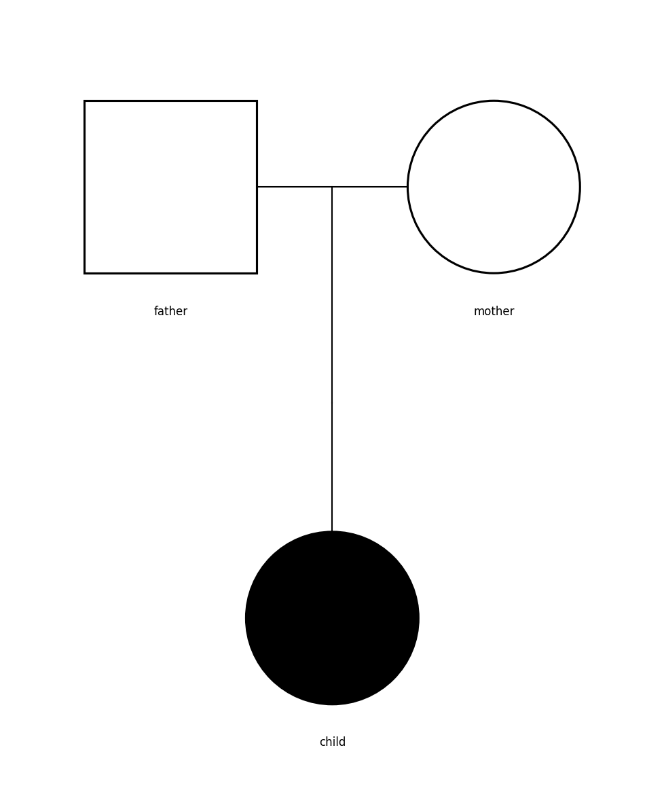
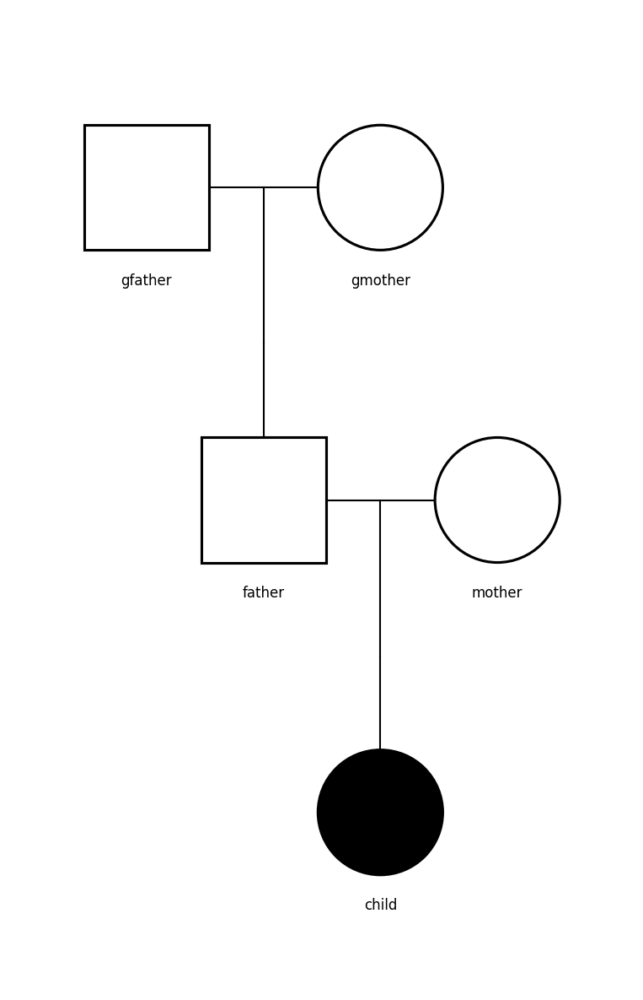
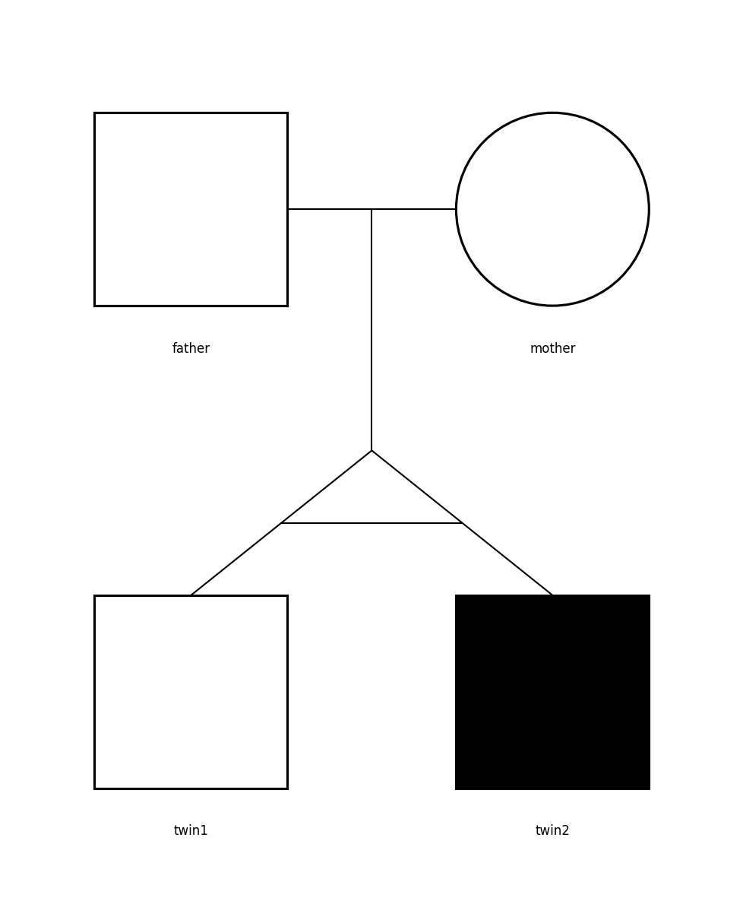
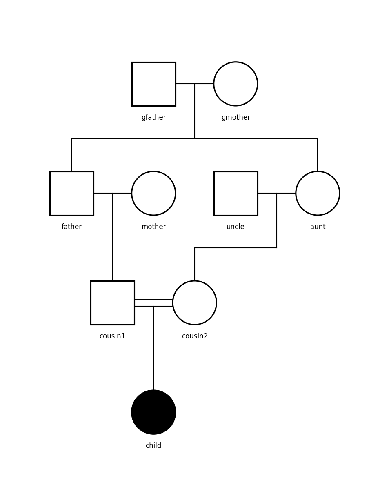
nomenclature.ped)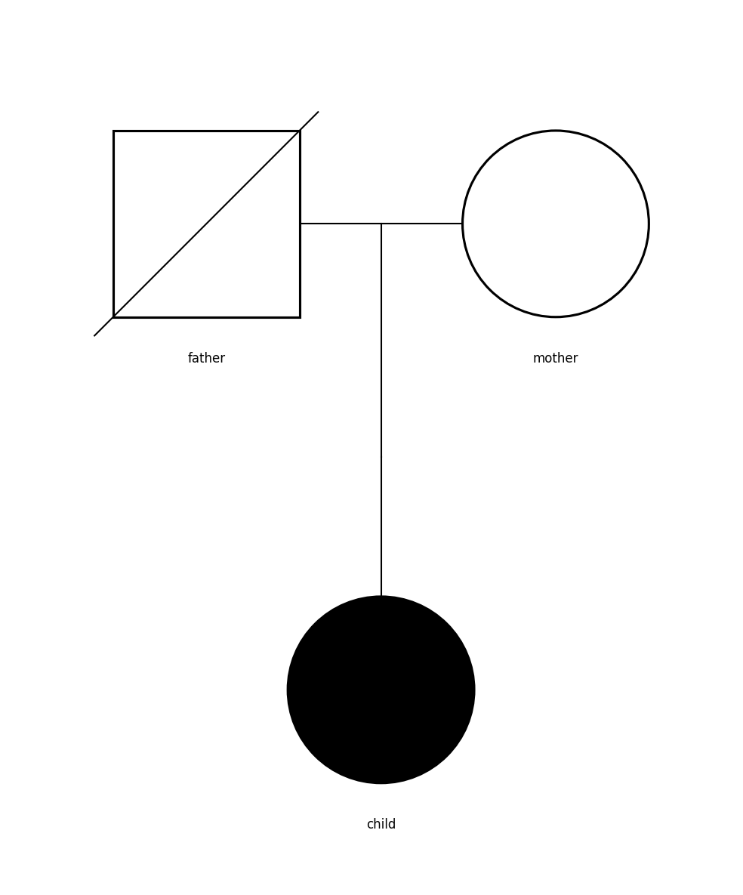
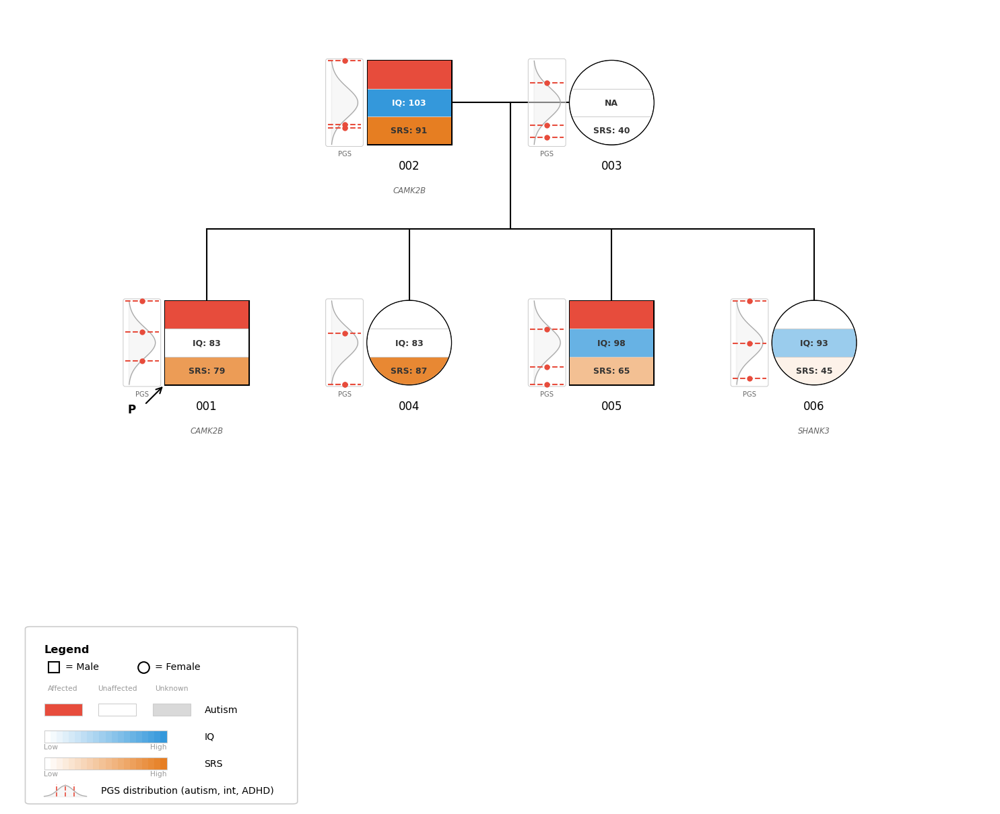
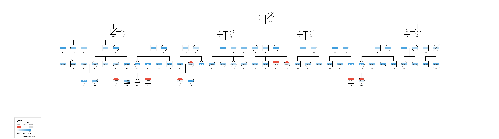
multigenerational.ped (synthetic): a first-cousin marriage (401 × 406) and a marriage between two branches (412 × 429), both drawn side by side with no duplicated individual, because each sibship is ordered so the branches of a loop meet. Binary, gradient and carrier bands, both kinds of twins, deceased individuals, a miscarriage and an adoption. Open it with --interactive to zoom in.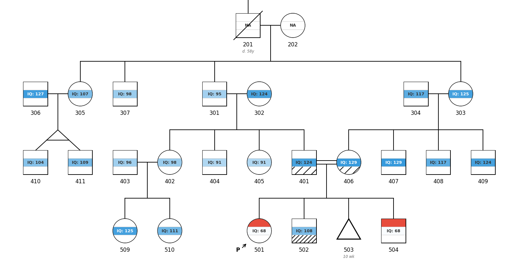
All pypedigree exceptions inherit from PedigreeError:
| Exception | When |
|---|---|
PedigreeParseError | File parsing failures (bad format, missing columns, invalid values) |
PedigreeValidationError | Data validation failures (duplicate IDs, circular references, sex mismatches) |
PedigreeLayoutError | Layout computation failures |
from pypedigree import parse_pedigree, PedigreeParseError
try:
ped = parse_pedigree("invalid.ped")
except PedigreeParseError as e:
print(f"Parse error: {e}")Every color in a style is checked before drawing starts, and all offending
values are reported together as a PedigreeError naming the option
each came from:
PedigreeError: Invalid color(s) in style: outline_color = '#12345';
phenotype_colors['Epilepsy'] = '#zzzzzz'. Expected hex values like
'#e74c3c' or named colors like 'grey'.Non-fatal diagnostics use dedicated categories, so they can be filtered or escalated independently of other libraries' warnings.
| Warning | Parent | When emitted |
|---|---|---|
PedigreeWarning | UserWarning | Base class for all pypedigree warnings |
PedigreeStyleWarning | PedigreeWarning | A style definition contains something unusable, e.g. an unknown option |
PedigreeDataWarning | PedigreeWarning | Pedigree data is questionable but still renderable, e.g. a father recorded as female |
import warnings
from pypedigree import PedigreeDataWarning, parse_pedigree
# Treat questionable data as a hard failure
warnings.simplefilter("error", PedigreeDataWarning)
ped = parse_pedigree("family.ped")An unknown key in a style file is ignored, but reported with a suggested spelling — silently dropping a typo is indistinguishable from the option having no effect:
PedigreeStyleWarning: Unknown style option 'phenotype_color' ignored;
did you mean 'phenotype_colors'?The CLI captures all of these and prints them as
Warning: <message> on stderr.